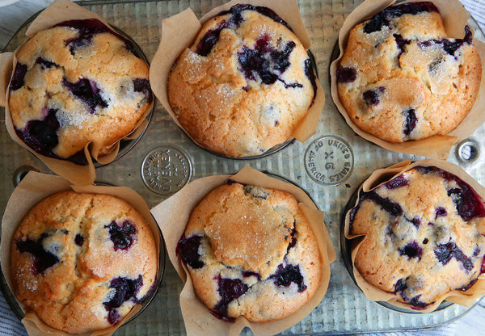

Jordan Marsh's Blueberry Muffins

Description
This recipe came to The Times in a 1987 article by Marian Burros, "The Battle of the Blueberry Muffins." Two years prior, Ms. Burros wrote about a recipe for the muffins attributed to the Ritz-Carlton in Boston. The hotel had adapted a recipe used by Gilchrist's, once one of city's best-known department stores. After it ran, a reader wrote in to say that the best blueberry muffins in Boston were not from the Ritz-Carlton, but from the now-closed Jordan Marsh department store. She sent along the recipe, with a description of how she picks wild blueberries: standing in a pond in the August heat and plucking berries from bushes along the bank. This version has a lot more sugar and butter and fewer eggs than the Ritz-Carlton muffins. The recipe also calls for mashing a half cup of berries and adding them to the batter. This produces a very moist muffin, one that will stay fresh longer.
Ingredients
- ½ cup softened butter
- 1 ¼ cups sugar
- 2 eggs
- 1 teaspoon vanilla extract
- 2 cups flour
- ½ teaspoon salt
- 2 teaspoons baking powder
- ½ cup milk
- 2 cups blueberries, washed, drained and picked over
- 3 teaspoons sugar
Steps
- Preheat the oven to 375.
- Cream the butter and 1 1/4 cups sugar until light.
- Add the eggs, one at a time, beating well after each addition. Add vanilla.
- Sift together the flour, salt and baking powder, and add to the creamed mixture alternately with the milk.
- Crush 1/2 cup blueberries with a fork, and mix into the batter. Fold in the remaining whole berries.
- Line a 12 cup standard muffin tin with cupcake liners, and fill with batter. Sprinkle the 3 teaspoons sugar over the tops of the muffins, and bake at 375 degrees for about 30-35 minutes.
- Remove muffins from tin and cool at least 30 minutes. Store, uncovered, or the muffins will be too moist the second day, if they last that long.
Baker's Notes
- Toss the berries in flour before adding, to keep them from sinking to the base of the muffin.